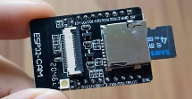
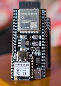
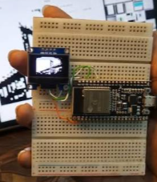
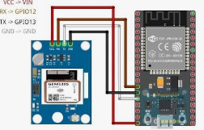

Voice Recognition
Listen to spoken questions and commands through the computer microphone.
VJAYA ROBOTICS PROJECT
PYTHON AI PROJECTMeet MUSKAN, a Python-based personal desktop voice assistant. Ask questions using your voice, receive spoken AI answers, control supported Windows applications, save personal memories, and communicate with ESP32 devices through MQTT.
Explore ProjectPROJECT OVERVIEW
MUSKAN is a PC-based voice assistant developed using Python. It listens to spoken commands through a microphone and responds using text-to-speech.
Groq provides the online AI service used to generate answers. Google speech recognition converts spoken input into text. The assistant can also manage personal memory and perform selected Windows PC commands.
An optional MQTT connection allows MUSKAN to send supported commands to an ESP32 through a HiveMQ broker.
MUSKAN AI — PC Voice Assistant
Your actual MUSKAN assistant photograph or screenshot will appear here.



WHAT IT CAN DO
Listen to spoken questions and commands through the computer microphone.
Generate conversational answers using the Groq AI API.
Read assistant responses aloud using Python text-to-speech.
Open supported Windows applications, open websites and lock the computer.
Remember, recall and forget facts using voice commands.
Send supported LED, fan and gate commands through a configured HiveMQ connection.
HARDWARE REQUIREMENTS
SOFTWARE REQUIREMENTS
Install the project dependencies using:
py -3.11 -m pip install -r requirements.txtHOW IT WORKS
VOICE CONTROL
| Voice Command | Action |
|---|---|
| Open Notepad | Opens Windows Notepad |
| Open Calculator | Opens Windows Calculator |
| Open Google | Opens Google in the browser |
| Open YouTube | Opens YouTube |
| Open File Explorer | Opens Windows File Explorer |
| Lock Computer | Locks the Windows workstation |
| Remember that my favorite color is blue | Saves a personal memory |
| What do you remember? | Reads saved memories |
| Forget favorite color | Removes matching saved memory |
| Goodbye | Stops the assistant |
OPTIONAL HARDWARE CONTROL
When HiveMQ credentials are configured and the MQTT connection is ready, MUSKAN can send the following supported commands to the ESP32.
| Voice Command | MQTT Command |
|---|---|
| LED ON | LED ON |
| LED OFF | LED OFF |
| Fan One ON | FAN1 ON |
| Fan One OFF | FAN1 OFF |
| Fan Two ON | FAN2 ON |
| Fan Two OFF | FAN2 OFF |
| Gate Open | GATE OPEN |
| Gate Close | GATE CLOSE |
PROGRAM STRUCTURE
Main application and command handling.
Assistant settings and environment configuration.
Groq AI API communication.
Microphone speech recognition and spoken responses.
Save, recall and delete personal memories.
Supported Windows application and PC controls.
HiveMQ MQTT connection and ESP32 commands.
PROGRAMMING
Download the original MUSKAN PC Voice Assistant files.
main1.py
Download Code ↓ 📄config.py
Download Code ↓ 📄ai_client.py
Download Code ↓ 📄voice.py
Download Code ↓ 📄memory_store.py
Download Code ↓ 📄pc_control.py
Download Code ↓ 📄mqtt_control.py
Download Code ↓ 📄requirements.txt
Download File ↓ 📄.env.example
Download File ↓ 📄README.md
Download File ↓PROJECT DEMONSTRATION
MUSKAN PC Voice Assistant Demonstration
Your actual assistant screenshot or demonstration video will appear here.IMPORTANT INFORMATION